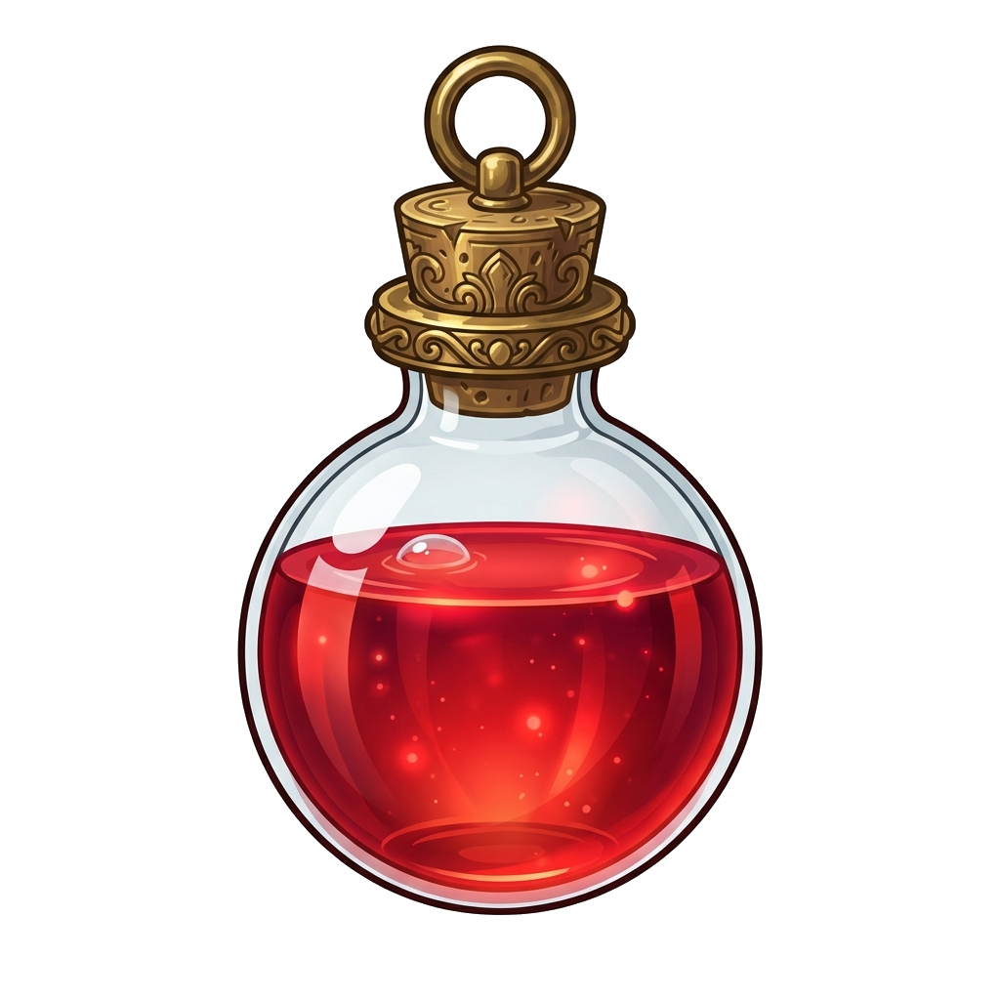
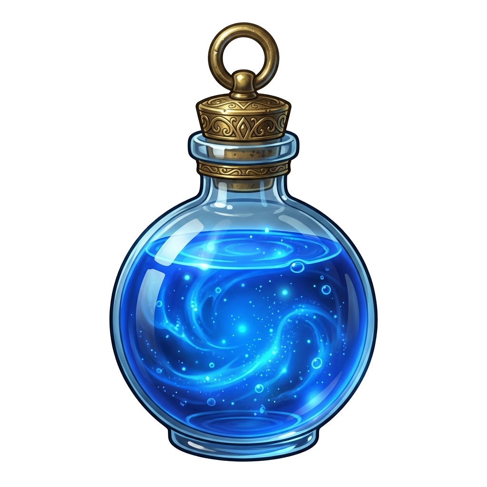
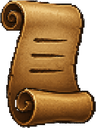

Defeat a rival and collect its essence
Loading the world and sprites
Bank unlocks after your first pickup



Defeat a rival, pick up its essence, then deposit it at the shrine. Secure 60 to complete the demo.
Press C to prepare Apocalipsis, then point and click a rival. Prepare again for each cast. Keep moving while aiming and casting. Inmovilizar stops movement; Remover parálisis targets a character, including yourself. Bots can remove immobilization too. Move away from enemy spell markers. Walk into the return portal to go back to Nix.
Stand on a dropped crystal and press Q. If you die, your carried essence drops in separate piles of up to 10. Rivals can steal it; defeat them to recover what they carry.
The shrine appears after your first pickup, south of the return portal. Stay nearby for a moment and watch essence flow into storage. Walk away to stop the transfer.
Auto-pot repeats a potion while its assigned macro is held. This demo assigns F1 to life and F2 to mana; you can also hold the hotbar buttons. With Auto-pot off, releasing uses one. Holding still consumes potions at full resources. This practice run supplies 100 of each; these are demo assignments, not your character’s saved macros.
On a phone, use the directional pad, Prepare button and contextual pickup button. Open Inventory for your inventory and resources.
This is an offline demonstration. Immobilization lasts 3 seconds, with rescaled mana costs and simple placeholder status effects. Rewards, combat and essence rules are illustrative; nothing affects your RAO account.
Your character follows you through the website and the Veil.
Two improved sprite sets, with their original equipment. Weapons are part of these complete looks for now.
Saved only in this browser. No account is needed, and appearance does not change combat stats.